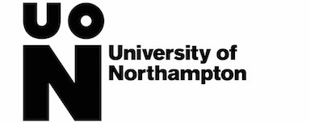

|  | CSY1018 Web Development Assignment 1 Semester 1 2017/18 |
|---|---|
| Words | AS1- CV Website (design & implement) (2,500 words or equivalent) |
| Weighting: | 50% |
| Credit Value: | a, b, c, d, e, h |
| Learning Outcomes Assessed: | 20 credits |
| Submission date: | Sunday April 22nd 2018, 23:59 |
| Feedback and Grades due: | 4th February 2018 |
| Module Leader: | Ganesh Khatri (ganesh.khatri@nami.edu.np) Liz Coulter-Smith (liz.coulter-smith@northampton.ac.uk) |
| Electronic copy available: | NILE |
- Coverpage
- Table of Content
- Introduction
- Background
- Mockup
- Validation/Testing
- Conclusion
Table of Content
1.Introduction
This page includes the overall report of web development’s assignment. In this assessment we were assigned to develop a “CV” website of us with the knowledge of HTML and CSS, which we received from our web development class. There are many parts in this assignment. We were asked to develop six webpages named index.html, cv.html, social.html, about.html, contact.html and model.html with their responsive contents. I also made my website media responsive since 60% of users are mobile users. We must complete certain task in each page to complete our assignment. We must upload it in GitHub and provide live URL to the module leader. I took some time on deciding the appearance of my website. After doing lots of practice and wireframes I decided to make this template as my CV. I looked at some of the similar website to gain some idea to make my website more attractive. I tried to implement my all skills in this website. Talking about group work, we also worked as a group to help each other out on simple things like designing the website and giving feedbacks where we learned more about CSS and HTML. We discussed about current trending designs. My website has approach to Google Material Design. I have used modern user interface designs and navigation system. My experience on first team of web development was quite good. I got to learn many new things and got chance to demonstrate my skills through this assessment. From the first week I have interest and enthusiasm in web development. As time passed I have gained more knowledge and I keep improving myself in web development.
2. Background
As I have developed six pages, there were some tasks in each page to be completed. The first page is my landing page, which will open in sequence as according to our setting in GitHub. It will be named as index.html. Second one is my About page where I must write my short biography and my professional aspirations as a developer. It will be name as about.html. Third one is our curriculum vitae i.e. CV named as cv.html. In this my task was to use at least 2 columns using flexbox. I can see existing templets for ideas. After this we have social page named as social.html. Here I must provide my social media links like Facebook, GitHub, LinkedIn, twitter etc. After this we have contact page named as contact.html. Here I must include static form and a map of our location on earth using google maps. Finally, we have our report in html format
3.Mockup
The graphical lookup of my webpage is given below. Here we have desktop as well as mobile view.
Home Desktop View

Home Media Resopnsive

About Desktop View

CV Desktop View

Contact Desktop View

Social Desktop View

4.Accessibility/Usability
After completion of my assignment, I have checked my whole code for validation in W3 HTML and CSS validator. Here is the picture of my code validation
CSS Validation of all pages

HTML Validation of all pages

5. Conclusion
With all the hard work I finally designed a webpage and made it responsive as well. I had some problems regarding user interface design and responsive, but I solved those problems and received my current result. Over all it was a new and good experience for me, I learned things which will be very helpful for me. At the beginning I felt a bit difficult while making website, but working in a group helped me. Not only I have learnt how to create website, I also learnt how to improve yourself and how important team work is.
Refreneces
Anon (2018) apple, black and white, business, camera, communication, computer, connection, contemporary, data, desk, display, electronics, equipments, gadgets, internet, ipad, keyboard, laptop, macbook, modern, monitor, numbers, 4k wallpaper and background. Download Awesome collection of handpicked wallpapers and images. [online]. Available from: http://www.tokkoro.com/3112663-apple_black-and-white_business_camera_communication_computer_connection_contemporary_data_desk_display_ele
Anon (2018) Image URL Help - TinEye. Tineye.com. [online]. Available from: https://www.tineye.com/imageurl [Accessed April 21, 2018].
Anon (2018) Font Awesome 5 Icons. Fontawesome.com. [online]. Available from: https://fontawesome.com/icons?d=gallery [Accessed April 2, 2018].
Anon (2018) Google Fonts. Google Fonts. [online]. Available from: https://fonts.google.com/specimen/Oswald/ [Accessed April 21, 2018].
Anon (2018) Google Fonts. Google Fonts. [online]. Available from: https://fonts.google.com/specimen/Saira+Condensed/ [Accessed April 1, 2018].